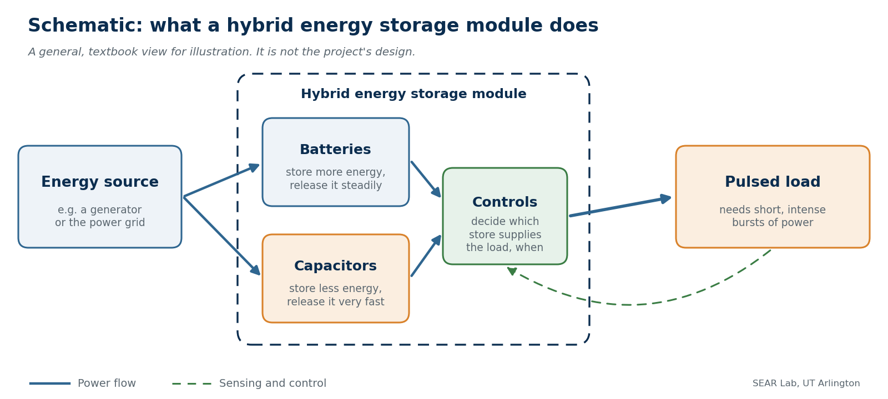

Hybrid Energy Storage Module (HESM)
Industrial, manufacturing and systems engineering (IMSE) students learn model-based systems engineering on an energy-storage problem of interest to the U.S. Department of Defense, alongside the project's electrical engineering team.
- Active
- 2023–2027
- Education and workforce
- Systems engineering
- Energy storage
- Power systems

In plain English
Some military equipment, such as pulsed-power and directed-energy systems, needs short, intense bursts of electricity rather than a steady supply. Meeting those bursts is partly a storage problem. Batteries hold a lot of energy but deliver it at lower power. Capacitors release power very quickly but hold less. A hybrid energy storage module combines the two, with controls that decide which one supplies the load and when.
In this Department of Defense–funded project, led by Dr. David Wetz in Electrical Engineering, SEAR Lab undergraduates in industrial, manufacturing and systems engineering study systems like this, working with Dr. Wetz's electrical engineering team. Students learn model-based systems engineering (MBSE): describing a system's requirements, parts and behavior in one shared digital model instead of scattered documents. The project is as much about preparing the next generation of power and energy engineers as it is about the research itself.
What we're working on now. Systems models are often complete on paper but impossible to prove wrong, so they rarely change a design. Our current work on HESM is building a way to hold the system model accountable to evidence, so that requirements can genuinely pass or fail and disagreements surface before hardware is built. In early use it has already caught inconsistencies across the project's documentation. Students learn to treat verification as a design skill, deciding up front what evidence would show a requirement is not met. We plan to publish the approach once it has been tested against the testbed.
Main points
- SEAR Lab's IMSE students carry the project's systems engineering, in coordination with its electrical engineering team.
- Students learn model-based systems engineering, keeping a system's requirements, parts and behavior in one shared model.
- The work touches power systems, energy storage, pulsed power, directed energy and controls, all areas of interest to the Department of Defense.
- Undergraduates have worked on the project since 2023, several through UTA College of Engineering undergraduate research (REU) awards.
Papers
Earlier work: defining a microgrid controls testbed with model-based systems engineering
Conlin, J., Conlin, G., Johnston, A., Wetz, D., & Jones, E.C., Jr. (2026). Developing the problem domain with systems engineering for a Mobile Microgrid Platform's Controls Testbed (MMPCT) designed for variable and extreme electrical load profiles. Proceedings of the IISE Annual Conference & Expo 2026.
A companion paper by SEAR Lab students under the same award.
People
- David Wetz, PhDPrincipal Investigator · Professor & Associate Chair, Electrical Engineering
- Erick C. Jones Jr., PhD, PECo-Principal Investigatorin
- Nathan MirandaUndergraduate researcher, BS Industrial Engineering, REU (HESM MBSE, 2023–2025)in
- Guillermo ConlinStudent researcher, IMSE (HESM MBSE, 2025–present) · Author, Proceedings of the IISE Annual Conference & Expo 2026 2026
- Baseel AtallahStudent researcher (HESM, 2023–2024)
- Tara ChandrakasemStudent researcher (HESM, 2023–2024)
- Dylan HoangStudent researcher (HESM, 2023–2024)
- Anne NguyenStudent researcher (HESM, 2023–2024)
- John ConlinAuthor, Proceedings of the IISE Annual Conference & Expo 2026 2026
- Alexander JohnstonAuthor, Proceedings of the IISE Annual Conference & Expo 2026 2026
Current team: names to be added from the lab personnel sheet. Profiles marked in link to LinkedIn. More past and present lab members are on the SEAR Lab team page.